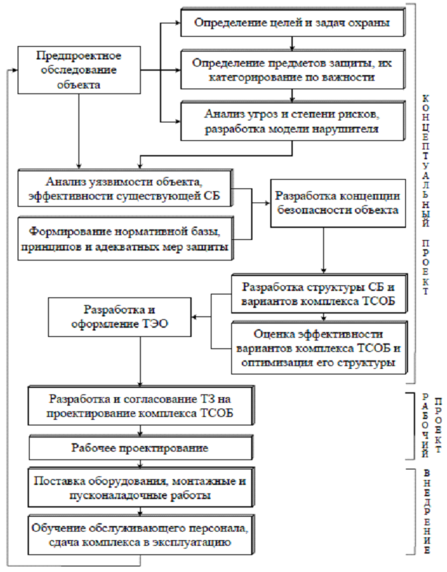

ОПРЕДЕЛЕНИЕ СТРУКТУРЫ ПОСТРОЕНИЯ СИСТЕМ БЕЗОПАСНОСТИ ИССЛЕДУЕМОГО ПОМЕЩЕНИЯ
Цели работы:
1. Научится определять структуру построения системы безопасности ис-следуемого помещения
Теоретические сведения:
Система охранно-пожарной сигнализации содержит следующие ос-новные элементы:.
- средства обнаружения угроз - извещатели;
- средства тревожной сигнализации - кнопки, педали, извещатели;
- средства сбора, обработки, отображения информации и управления
- прибор приемно-контрольный (ППК) охранный, контрольные па-нели,
- концентраторы, компьютеры, расширители, адресные и релейные модули,
- модемы, световые и звуковые оповещатели и т.п.
Система пожарной сигнализации содержит следующие основные элемен-ты:
- средства обнаружения угроз – пожарные извещатели (тепловые, дымовые, световые(пламени) газовые, ручные и т.п.);
- средства сбора, обработки, отображения информации и управления
- ППК пожарный, контрольные панели, пульты, компьютеры, панели и
- консоли управления, адресные модули, расширители, световые и
звуковые
- оповещатели, согласующие устройства и т.п.
При разработке эффективной СБ следует учитывать перспективы разви-тия объекта охраны, прогноз возникновения новых угроз и современные до-стижения в области охранных технологий. В противном случае СБ может быстро устареть, а её модернизация будет неэффективной. Комплексный науч-ный подход к созданию СБ важных объектов подразумевает реализацию трех основных этапов:
1. Концептуальное (системное) проектирование.
2. Рабочее проектирование.
3. Внедрение.
На рисунке 1 будет представлена структура жизненного цикла системы безопасности

Рисунок 1 – Структура жизненного цикла системы безопасности
Практическая часть:
1. Построить структурную схему пожарной безопасности.
2. Построить структурную схему охранной безопасности.
3. Построить структурную схему СКУД.
4. Оформить выходной документ – чертеж структурных схем систем безопасности.
5. Оформить отчет.
Содержание отчета:
1. Титульный лист.
2. Цель работы.
3. Вариант задания.
4. Ход работы с пояснениями.
5. Чертеж структурной схемы систем безопасности.
6. Выводы по работе.
Контрольные вопросы:
1. Какие элементы должна содержать пожарная система безопасности?
2. Какие элементы охранной система безопасности вы использовали в вашем проекте?
3. Какие основные этапы создания систем безопасности вы знаете?
4. Назовите основные этапы жизненного цикла системы безопасности.